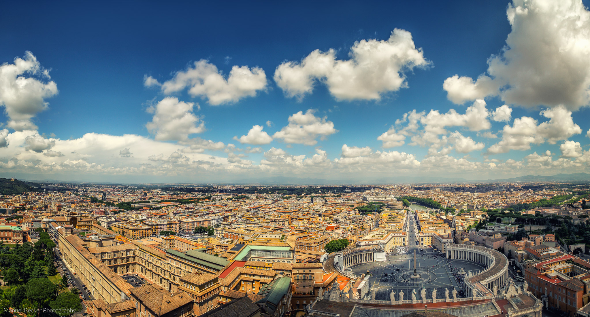
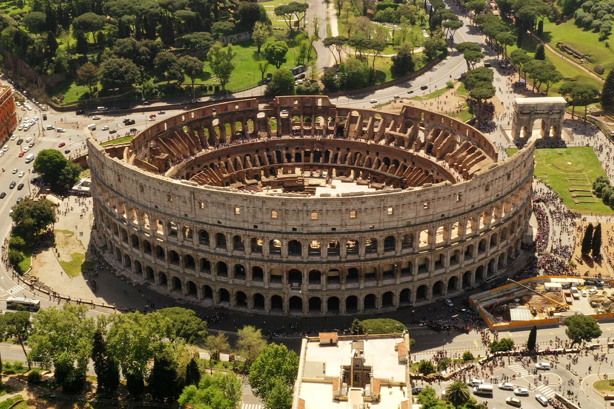

Rzymⓘ (wł. Roma, łac. Roma) – stolica i największe miasto Włoch, położone w środkowej części kraju nad rzeką Tyber i Morzem Śródziemnym, zarazem stolica regionu administracyjno-historycznego Lacjum (Lazio). Centrum administracyjne (wł. comune speciale) ma powierzchnię 1287 km² i liczbę ludności 2 825 661[2], będąc trzecim co do wielkości miastem Unii Europejskiej. Miasto Stołeczne Rzym ma 4 331 856 mieszkańców[3]. Rzym od starożytności znany jest jako Wieczne Miasto (łac. Roma Aeterna), a także „stolica świata” (łac. caput mundi – dosłownie „głowa świata”)[4]. Rzym jest metropolią o znaczeniu globalnym[5][6], a także dużym węzłem komunikacyjnym z jednym z największych międzynarodowych portów lotniczych w Europie, który obsługuje ponad 38 milionów pasażerów rocznie, rozbudowaną siecią autostrad i linii kolei dużych prędkości. Światowy ośrodek turystyczny z bardzo bogatymi zabytkami starożytności i średniowiecza (kościoły, bazyliki, Koloseum, pałace, akwedukty, fontanny i wiele innych budowli), niezwykle bogate muzea, nowoczesne osiedla mieszkaniowe na przedmieściach. W 1960 roku organizował Letnie Igrzyska Olimpijskie. W 2017 roku Rzym odwiedziło 9,5 mln turystów w ciągu roku[7]. Znajdują się tu siedziby dwóch organizacji ONZ: organizacji do spraw Wyżywienia i Rolnictwa oraz Międzynarodowego Funduszu Rozwoju Rolnictwa. W granicach Rzymu, na prawym brzegu Tybru, leży miasto-państwo Watykan (łac. Status Civitatis Vaticanæ), będący enklawą na terytorium państwowym Włoch.

Koloseum zostało zbudowane przez cesarzy Wespazjana i Tytusa jako monumentalny amfiteatr, który mógł pomieścić od 45 do 50 tysięcy widzów. Jego eliptyczny kształt ma długość 188 m i szerokość 156 m, a wysokość wynosi 48,5 m. Budowla składa się z czterech kondygnacji, z których trzy dolne są ozdobione arkadami w porządku toskańskim, jońskim i korynckim.

Bazylika Świętego Piotra na Watykanie (wł. Basilica Papale di San Pietro in Vaticano; łac. Basilica Sancti Petri) – rzymskokatolicka bazylika na Wzgórzu Watykańskim, zbudowana w latach 1506–1626, na miejscu starszej bazyliki wczesnochrześcijańskiej, fundacji cesarza Konstantyna Wielkiego, jedna z czterech bazylik większych Rzymu oraz jedna z wielu bazylik papieskich (dawniej patriarchalnych), sanktuarium, jeden z najważniejszych ośrodków pielgrzymkowych. Wedle tradycji bazylika stoi na miejscu pochówku św. Piotra, uznawanego przez katolików za pierwszego papieża – jego grób leży pod głównym ołtarzem. Świątynia jest nekropolią papieży, w tym świętych m.in. Leona Wielkiego, Leona III, Grzegorza Wielkiego, Piusa X, Jana XXIII i Jana Pawła II. Miejsce obrad dwóch ostatnich soborów Kościoła katolickiego – Watykańskiego I i Watykańskiego II. Czołowe dzieło architektury renesansu i baroku, z bardzo bogatym wystrojem wnętrza, gdzie znalazły się również zabytki pochodzące z dawnej konstantyńskiej bazyliki zbudowanej w tym miejscu (m.in. brązowa figura św. Piotra Arnolfa di Cambio). W okresie nowożytnym swoje dzieła sztuki wykonali tu Michał Anioł (Pietà watykańska), Gianlorenzo Bernini (m.in. ołtarz świętego Piotra z baldachimem, Cathedra Petri, nagrobki papieży Aleksandra VII i Urbana VIII, figura św. Longinusa), Alessandro Algardi, Antonio Canova, Bertel Thorvaldsen.